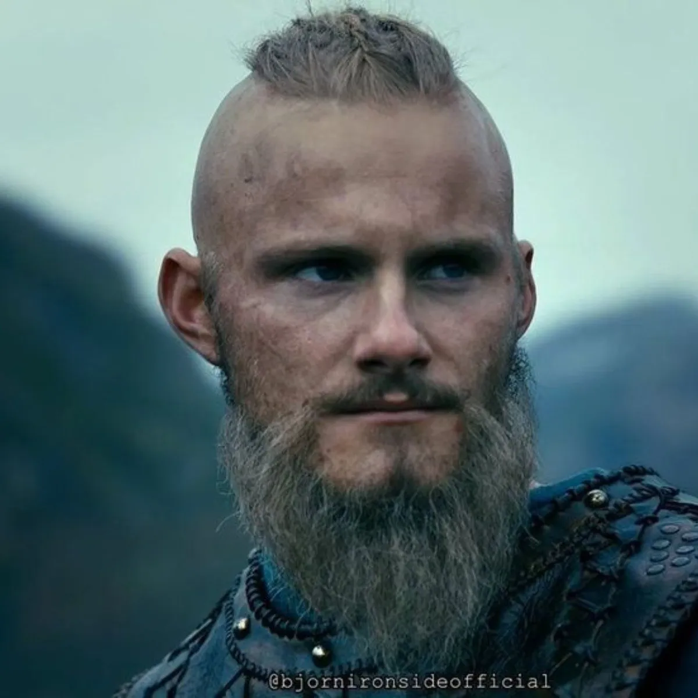
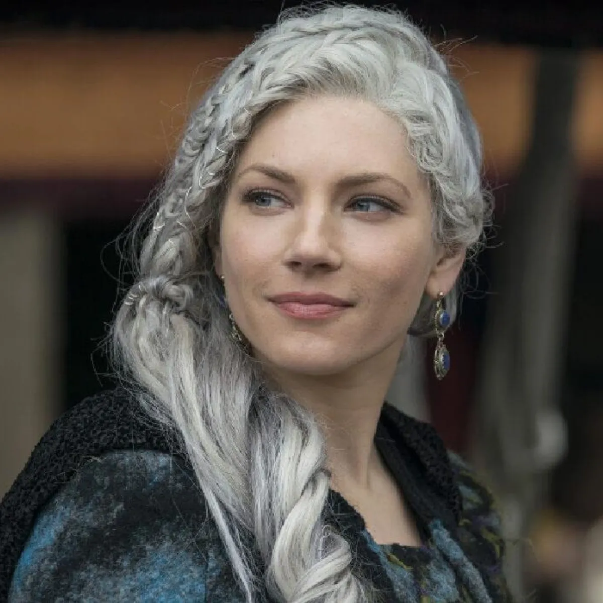
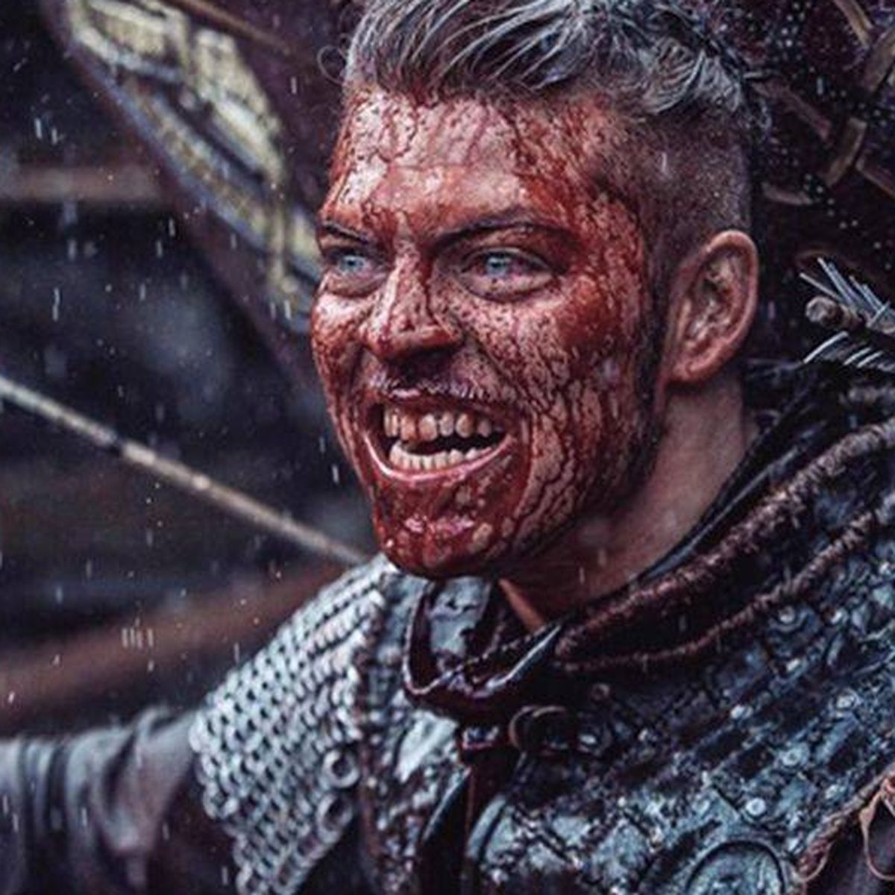

Seguido
Björn Ragnarsson
@username
Mejor conocido como Brazo de Hierro. Rey vikingo de
#Suecia
, goberné durante el siglo VIII o IX, nadie está seguro, y yo lo olvidé...
2.4k
Siguiendo
24.2M
Seguidores
 
Larguertha, Ragnar y 80 personas que sigues también siguen a esta cuenta.